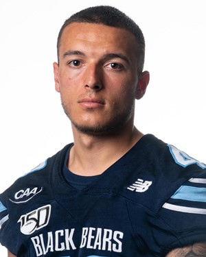

Jake Maggio is a Long Snapper On the University of Maine Football Team. Jake Was born on March 27th 2000 in Planfield, New Jersey. I am currently studying business with a minor in media studies. After College Jake plans to coach football at the college level. Later, Jake plans to get my masters degree in sports management and work in the opperations field of a pro franchise. Also, Jake looks to run kickball tourtamnets on the weekends. Some of Jake's teammates plan to particpate in Kickball such as Bryce Colee, Sam Lenson, Fred Mcalpin and Daniel Rymer. Jake plans to use orginzing sporting events such as kickball to help him later in life. Jake loves kickball becuase he built a love for the game playing on the playground in elementary school. Jake played lots of kickball at Adamsville Elementary School in Bridgewater, New Jersey. By the time Jake was in 4th Grade he started to kick home runs. Jake also liked helping coach the players who were not as good. Jake also is good recruitng. Jake was able to recruit many good kickball players. Jake is currently recruiting Justin Sambu, Kurt Von Bargen, Ted Kubongo and John Williams. Jake has strong connections in the areas of Bangor, Maine, The Greater New York area and South Jersey.
 Contact Soical Media Get Involved Stats